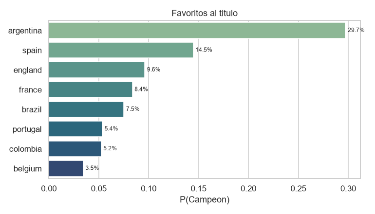

Pronostico diario - Mundial 2026
Snapshot 2026-06-29T16-28-00Z_baseline-v1-2026-06-29-1551cae - publicado 2026-06-29T16:28:00Z - modelo baseline-v1-2026-06-29-1551cae
Resumen ejecutivo

Proximo bloque de partidos
No hay partidos de grupo pendientes en este snapshot.
Probabilidades del torneo
| Equipo | P(R16) | P(QF) | P(SF) | P(Final) | P(Campeon) |
|---|---|---|---|---|---|
| argentina | 95.5% | 83.4% | 62.5% | 43.2% | 29.7% |
| spain | 79.5% | 52.2% | 40.2% | 26.0% | 14.5% |
| england | 84.4% | 59.5% | 35.2% | 16.8% | 9.6% |
| france | 83.6% | 54.0% | 34.7% | 18.8% | 8.4% |
| brazil | 67.1% | 51.0% | 30.3% | 14.1% | 7.5% |
| portugal | 69.9% | 32.2% | 22.3% | 12.5% | 5.4% |
| colombia | 89.2% | 59.2% | 22.4% | 11.2% | 5.2% |
| belgium | 65.1% | 52.9% | 20.0% | 9.7% | 3.5% |
Evolucion temporal
Comparacion vs anterior (2026-06-29T16-25-30Z_baseline-v1-2026-06-29-1551cae) y vs primero (2026-06-13T22-02-08Z_baseline-v1-2026-06-13-50d98ab).
| Equipo | P(Campeon) actual | vs anterior | vs primero |
|---|---|---|---|
| argentina | 29.7% | +0.0 pp | +8.4 pp |
| spain | 14.5% | +0.0 pp | +0.2 pp |
| england | 9.6% | +0.0 pp | -0.5 pp |
| france | 8.4% | +0.0 pp | +1.9 pp |
| brazil | 7.5% | +0.0 pp | -2.1 pp |
| portugal | 5.4% | +0.0 pp | -1.1 pp |
| colombia | 5.2% | +0.0 pp | +1.0 pp |
| belgium | 3.5% | +0.0 pp | -0.7 pp |
Calibracion acumulada (modelo vs mercado)
Aun no hay partidos resueltos para evaluar log-loss / RPS acumulados.
Decision de modelo (upgrade gated)
Sin promocion: ningun candidato vencio al baseline en los cuatro holdouts. Se publica unicamente el baseline (resultado negativo explicito).
- Familia ganadora del gate: baseline
- Filas baseline publicadas: 0
- Filas upgrade publicadas (junto al baseline): 0
- Partidos con fallback explicito al baseline: 0
Nota metodologica
Este reporte se renderiza exclusivamente desde artefactos congelados del snapshot (2026-06-29T16-28-00Z_baseline-v1-2026-06-29-1551cae) y el ledger canonico de calibracion; no reentrena el modelo ni reejecuta simulaciones. Las probabilidades del torneo provienen de 10000 simulaciones Monte Carlo (semilla 20260613) sobre el baseline Elo + Dixon-Coles. El benchmark de mercado es la mediana de-margined entre casas, congelada al publicar.